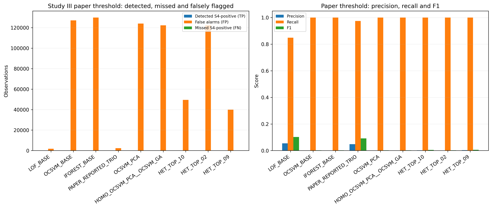
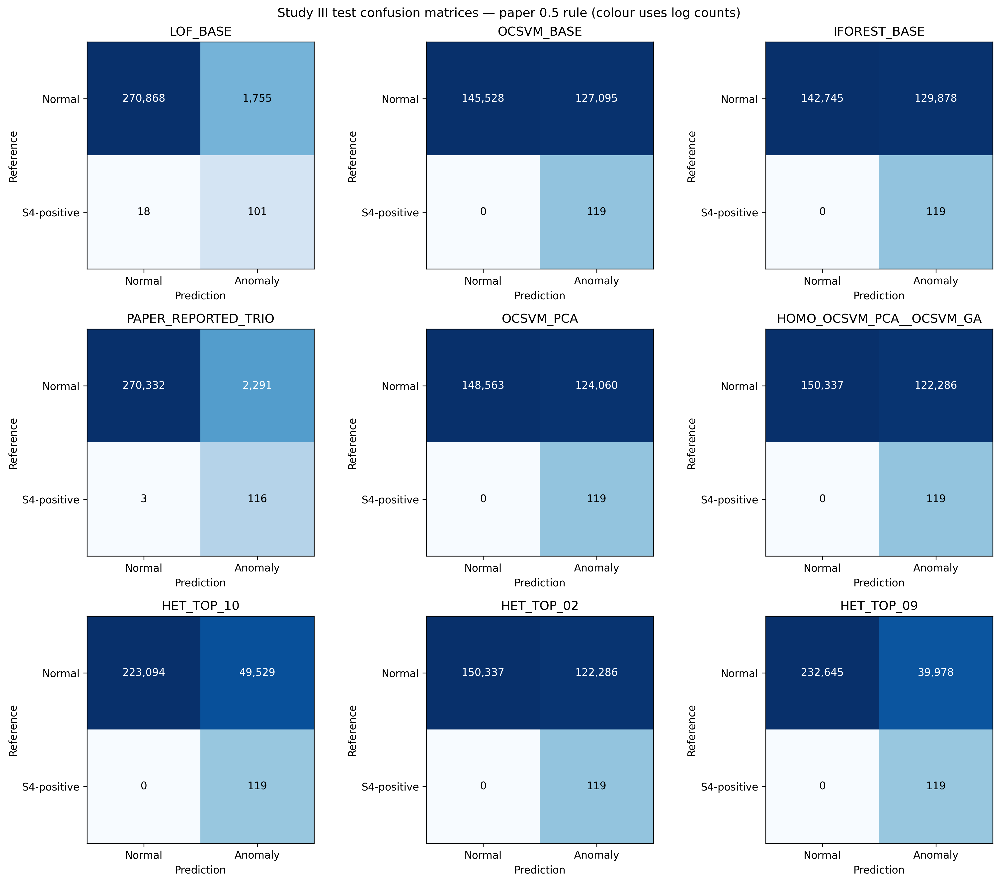
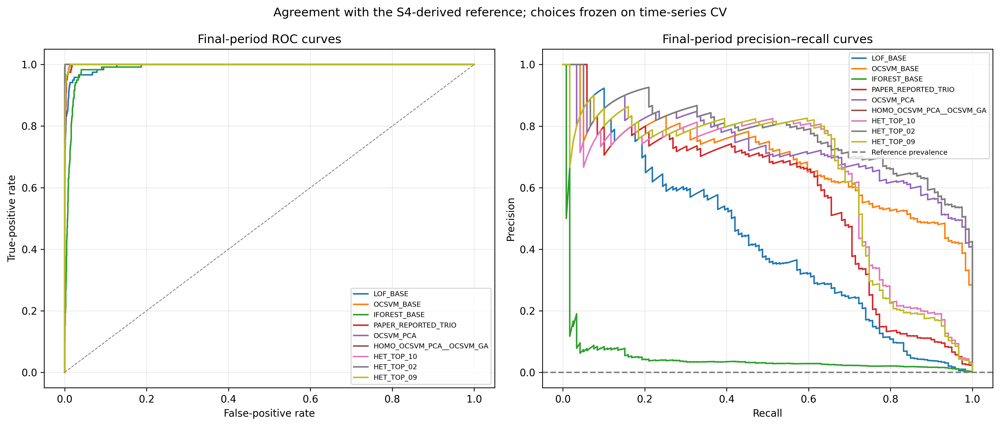
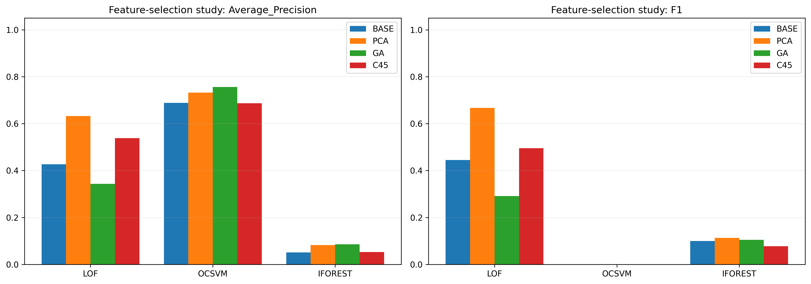
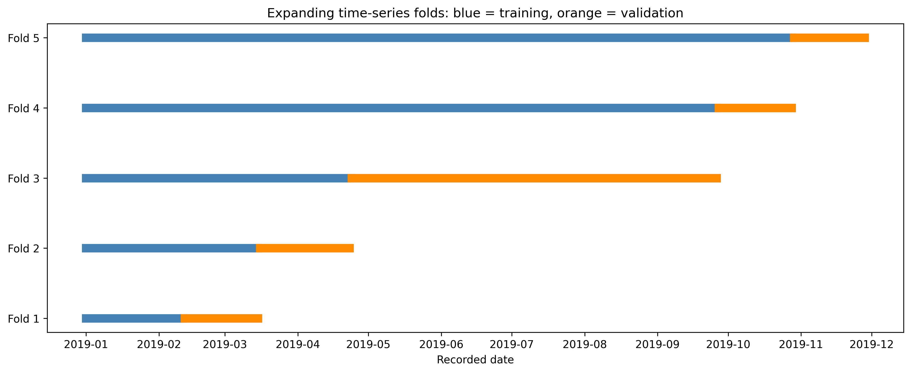
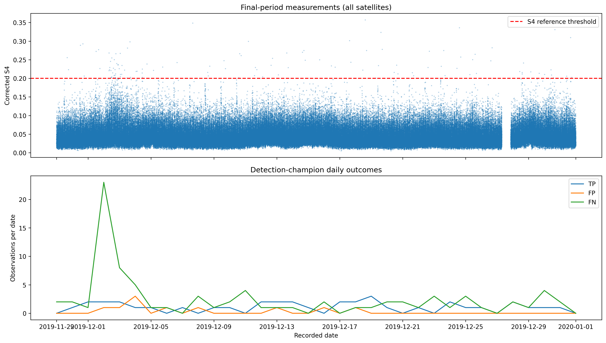

Source: Tsai and Lin (2021), DOI 10.1109/ACCESS.2021.3051969, Sections III–IV.
This experiment is a documented adaptation: five expanding folds grouped by complete dates; all fits use only class-0 observations; at most 5,000 normal rows are sampled proportionally by date; Corrected_S4 is mandatory, including an explicit channel alongside PCA of other predictors. All earlier data preparation and EDA code is preserved.
Published settings: LOF k=10 / Euclidean; OCSVM RBF, nu=0.5, gamma=1/d; Isolation Forest 100 trees, max_samples=100, contamination=0.5. PCA retains 80% variance; K-means creates 10/50/100 normal-data pseudo-classes. DEAP uses population 10, 5 generations, crossover 0.9 and per-bit mutation 0.01. GA selection is lexicographic pseudo-class accuracy then fewer features; pseudo-class CV, elitism, tournament size 3, and J48 pruning defaults are implementation choices not fully specified in the paper.
J48 is genuine C4.5-family software, not sklearn CART. Two-class C4.5 and SMOTE baselines are omitted under the normal-only fitting requirement. The 33 homogeneous and 19 heterogeneous ensembles follow Tables 1/2/6. The fixed reported trio is an extra, explicitly labelled comparison. Ensembles equally average oriented scores (Eq. 1). Boundary-preserving arctan normalization and one seeded bootstrap per member are stated choices where the paper lacks reproducible details.
The paper's 0.5 threshold is reported separately from CV F1/F2 and 0.1% FPR operating points. Top-N denotes the paper's cross-pool design; it does not guarantee that a given dataset's top members use different base algorithms. Membership is audited, and the genuinely heterogeneous family comparison excludes combinations containing only one base algorithm. CV selects cluster counts, ensemble membership and thresholds. No final-test metrics select winners. The paper-AUC champion is HET_TOP_02; the detection-F1 champion is HET_TOP_09. Five-fold results are development/model-selection estimates; they are not an additional untouched test. The final period was evaluated in an earlier run.
REFERENCE LIMITATION: LABEL is derived from Corrected_S4, which remains a predictor. TP therefore means agreement with this reference, not independently confirmed physical events. The reference threshold rule is a consistency check and would agree perfectly by construction. The full cleaned 2019 dataset has an imbalance ratio much higher than the paper's maximum 129.44; its published improvement is not guaranteed here. Candidate consecutive runs are not verified events.
Uncertainty intervals resample whole dates and cover count-derived metrics. ROC/PR metrics use all observations; plotted PR compression preserves every recall change. PNG/PDF figures, CSV/LaTeX tables, full numeric scores, selected feature maps, GA histories, seeds, parameters, normalization constants and source-row indices are retained. Earlier notebook cell outputs are historical; this result directory and its manifest identify the actual experiment.
| Model group | TP | FP | FN | Precision | Recall | F1 | ROC_AUC | Average_Precision |
|---|---|---|---|---|---|---|---|---|
| Single: OCSVM-PCA | 119 | 124060 | 0 | 0.0010 | 1.0000 | 0.0019 | 0.9999 | 0.7319 |
| Homogeneous: OCSVM PCA+GA | 119 | 122286 | 0 | 0.0010 | 1.0000 | 0.0019 | 0.9999 | 0.7718 |
| Heterogeneous: top 10 | 119 | 49529 | 0 | 0.0024 | 1.0000 | 0.0048 | 0.9993 | 0.6247 |
| Paper-reported trio | 116 | 2291 | 3 | 0.0482 | 0.9748 | 0.0918 | 0.9988 | 0.5601 |
| Model | Threshold_Method | TP | FP | FN | Precision | Recall | F1 | F2 | MCC |
|---|---|---|---|---|---|---|---|---|---|
| HET_TOP_09 | Paper_0.5 | 119 | 39978 | 0 | 0.0030 | 1.0000 | 0.0059 | 0.0147 | 0.0503 |
| HET_TOP_09 | CV_F1 | 37 | 10 | 82 | 0.7872 | 0.3109 | 0.4458 | 0.3537 | 0.4946 |
| HET_TOP_09 | CV_F2 | 73 | 17 | 46 | 0.8111 | 0.6134 | 0.6986 | 0.6449 | 0.7053 |
| HET_TOP_09 | CV_FPR_0.1pct | 82 | 46 | 37 | 0.6406 | 0.6891 | 0.6640 | 0.6788 | 0.6643 |
| HET_TOP_10 | Paper_0.5 | 119 | 49529 | 0 | 0.0024 | 1.0000 | 0.0048 | 0.0119 | 0.0443 |
| HET_TOP_10 | CV_F1 | 40 | 12 | 79 | 0.7692 | 0.3361 | 0.4678 | 0.3788 | 0.5084 |
| HET_TOP_10 | CV_F2 | 77 | 21 | 42 | 0.7857 | 0.6471 | 0.7097 | 0.6707 | 0.7129 |
| HET_TOP_10 | CV_FPR_0.1pct | 84 | 50 | 35 | 0.6269 | 0.7059 | 0.6640 | 0.6885 | 0.6650 |
The final run reused verified previously computed CV folds after an ensemble-category correction. No numerical fitting settings changed. Per-fit CV timings are retained; the resumed wall-clock time is not a fresh end-to-end benchmark.
| Model | Family | Threshold_Method | threshold | operator | TP | FP | FN | TN | Actual_Anomalies | Detected_Anomalies | Precision | Recall | F1 | F2 | Specificity | FPR | NPV | Accuracy | Balanced_Accuracy | MCC | Prevalence | ROC_AUC | Average_Precision | PR_AUC_Trapezoidal | False_Alarms_Per_Observed_Day |
|---|---|---|---|---|---|---|---|---|---|---|---|---|---|---|---|---|---|---|---|---|---|---|---|---|---|
| LOF_BASE | Single OCC | Paper_0.5 | 0.5000 | > | 101 | 1755 | 18 | 270868 | 119 | 1856 | 0.0544 | 0.8487 | 0.1023 | 0.2166 | 0.9936 | 0.0064 | 0.9999 | 0.9935 | 0.9212 | 0.2140 | 0.0004 | 0.9948 | 0.4271 | 0.4250 | 51.6176 |
| OCSVM_BASE | Single OCC | Paper_0.5 | 0.5000 | > | 119 | 127095 | 0 | 145528 | 119 | 127214 | 0.0009 | 1.0000 | 0.0019 | 0.0047 | 0.5338 | 0.4662 | 1.0000 | 0.5340 | 0.7669 | 0.0223 | 0.0004 | 0.9998 | 0.6882 | 0.6859 | 3738.0882 |
| IFOREST_BASE | Single OCC | Paper_0.5 | 0.5000 | > | 119 | 129878 | 0 | 142745 | 119 | 129997 | 0.0009 | 1.0000 | 0.0018 | 0.0046 | 0.5236 | 0.4764 | 1.0000 | 0.5238 | 0.7618 | 0.0219 | 0.0004 | 0.9885 | 0.0507 | 0.0489 | 3819.9412 |
| PAPER_REPORTED_TRIO | Paper reported example | Paper_0.5 | 0.5000 | > | 116 | 2291 | 3 | 270332 | 119 | 2407 | 0.0482 | 0.9748 | 0.0918 | 0.2012 | 0.9916 | 0.0084 | 1.0000 | 0.9916 | 0.9832 | 0.2158 | 0.0004 | 0.9988 | 0.5601 | 0.5580 | 67.3824 |
| OCSVM_PCA | Single OCC | Paper_0.5 | 0.5000 | > | 119 | 124060 | 0 | 148563 | 119 | 124179 | 0.0010 | 1.0000 | 0.0019 | 0.0048 | 0.5449 | 0.4551 | 1.0000 | 0.5451 | 0.7725 | 0.0229 | 0.0004 | 0.9999 | 0.7319 | 0.7297 | 3648.8235 |
| HOMO_OCSVM_PCA__OCSVM_GA | Homogeneous | Paper_0.5 | 0.5000 | > | 119 | 122286 | 0 | 150337 | 119 | 122405 | 0.0010 | 1.0000 | 0.0019 | 0.0048 | 0.5514 | 0.4486 | 1.0000 | 0.5516 | 0.7757 | 0.0232 | 0.0004 | 0.9999 | 0.7718 | 0.7701 | 3596.6471 |
| HET_TOP_10 | Heterogeneous | Paper_0.5 | 0.5000 | > | 119 | 49529 | 0 | 223094 | 119 | 49648 | 0.0024 | 1.0000 | 0.0048 | 0.0119 | 0.8183 | 0.1817 | 1.0000 | 0.8184 | 0.9092 | 0.0443 | 0.0004 | 0.9993 | 0.6247 | 0.6216 | 1456.7353 |
| HET_TOP_02 | Top-N (single base algorithm) | Paper_0.5 | 0.5000 | > | 119 | 122286 | 0 | 150337 | 119 | 122405 | 0.0010 | 1.0000 | 0.0019 | 0.0048 | 0.5514 | 0.4486 | 1.0000 | 0.5516 | 0.7757 | 0.0232 | 0.0004 | 0.9999 | 0.7718 | 0.7701 | 3596.6471 |
| HET_TOP_09 | Heterogeneous | Paper_0.5 | 0.5000 | > | 119 | 39978 | 0 | 232645 | 119 | 40097 | 0.0030 | 1.0000 | 0.0059 | 0.0147 | 0.8534 | 0.1466 | 1.0000 | 0.8534 | 0.9267 | 0.0503 | 0.0004 | 0.9992 | 0.6337 | 0.6311 | 1175.8235 |
| Model | Family | Threshold_Method | threshold | operator | TP | FP | FN | TN | Actual_Anomalies | Detected_Anomalies | Precision | Recall | F1 | F2 | Specificity | FPR | NPV | Accuracy | Balanced_Accuracy | MCC | Prevalence | ROC_AUC | Average_Precision | PR_AUC_Trapezoidal | False_Alarms_Per_Observed_Day |
|---|---|---|---|---|---|---|---|---|---|---|---|---|---|---|---|---|---|---|---|---|---|---|---|---|---|
| LOF_BASE | Single OCC | CV_F1 | 0.9484 | >= | 54 | 70 | 65 | 272553 | 119 | 124 | 0.4355 | 0.4538 | 0.4444 | 0.4500 | 0.9997 | 0.0003 | 0.9998 | 0.9995 | 0.7268 | 0.4443 | 0.0004 | 0.9948 | 0.4271 | 0.4250 | 2.0588 |
| OCSVM_BASE | Single OCC | CV_F1 | 0.9241 | >= | 0 | 0 | 119 | 272623 | 119 | 0 | 0.0000 | 0.0000 | 0.0000 | 0.0000 | 1.0000 | 0.0000 | 0.9996 | 0.9996 | 0.5000 | 0.0000 | 0.0004 | 0.9998 | 0.6882 | 0.6859 | 0.0000 |
| IFOREST_BASE | Single OCC | CV_F1 | 0.9061 | >= | 16 | 186 | 103 | 272437 | 119 | 202 | 0.0792 | 0.1345 | 0.0997 | 0.1180 | 0.9993 | 0.0007 | 0.9996 | 0.9989 | 0.5669 | 0.1027 | 0.0004 | 0.9885 | 0.0507 | 0.0489 | 5.4706 |
| PAPER_REPORTED_TRIO | Paper reported example | CV_F1 | 0.9338 | >= | 34 | 13 | 85 | 272610 | 119 | 47 | 0.7234 | 0.2857 | 0.4096 | 0.3250 | 1.0000 | 0.0000 | 0.9997 | 0.9996 | 0.6428 | 0.4545 | 0.0004 | 0.9988 | 0.5601 | 0.5580 | 0.3824 |
| OCSVM_PCA | Single OCC | CV_F1 | 0.9095 | >= | 0 | 0 | 119 | 272623 | 119 | 0 | 0.0000 | 0.0000 | 0.0000 | 0.0000 | 1.0000 | 0.0000 | 0.9996 | 0.9996 | 0.5000 | 0.0000 | 0.0004 | 0.9999 | 0.7319 | 0.7297 | 0.0000 |
| HOMO_OCSVM_PCA__OCSVM_GA | Homogeneous | CV_F1 | 0.9179 | >= | 0 | 0 | 119 | 272623 | 119 | 0 | 0.0000 | 0.0000 | 0.0000 | 0.0000 | 1.0000 | 0.0000 | 0.9996 | 0.9996 | 0.5000 | 0.0000 | 0.0004 | 0.9999 | 0.7718 | 0.7701 | 0.0000 |
| HET_TOP_10 | Heterogeneous | CV_F1 | 0.9171 | >= | 40 | 12 | 79 | 272611 | 119 | 52 | 0.7692 | 0.3361 | 0.4678 | 0.3788 | 1.0000 | 0.0000 | 0.9997 | 0.9997 | 0.6680 | 0.5084 | 0.0004 | 0.9993 | 0.6247 | 0.6216 | 0.3529 |
| HET_TOP_02 | Top-N (single base algorithm) | CV_F1 | 0.9179 | >= | 0 | 0 | 119 | 272623 | 119 | 0 | 0.0000 | 0.0000 | 0.0000 | 0.0000 | 1.0000 | 0.0000 | 0.9996 | 0.9996 | 0.5000 | 0.0000 | 0.0004 | 0.9999 | 0.7718 | 0.7701 | 0.0000 |
| HET_TOP_09 | Heterogeneous | CV_F1 | 0.9223 | >= | 37 | 10 | 82 | 272613 | 119 | 47 | 0.7872 | 0.3109 | 0.4458 | 0.3537 | 1.0000 | 0.0000 | 0.9997 | 0.9997 | 0.6554 | 0.4946 | 0.0004 | 0.9992 | 0.6337 | 0.6311 | 0.2941 |





